MUSEO INTERNACIONAL DEL LOUVRE
El Museo del Louvre es una de las instituciones más grandes y emblemáticas del mundo. Resguarda entre sus paredes siglos de importante historia, arte y vestigios del desarrollo de la humanidad.
En colaboración con INUCREATE, el Museo Internacional del Louvre ahora se presenta como Louvre, uniéndose a las múltiples instituciones que eligen abrazar una imagen de modernidad, conectando el pasado clásico de su historia con las tendencias del presente.
¡VISITA NUESTRAS INSTALACIONES DESDE LA COMODIDAD DE TU HOGAR Y PREPÁRATE PARA VIVIR EL FESTIVAL INSIGHT!
FESTIVAL INTERNACIONAL DE PENSAMIENTO, CINE Y LIBROS
Presentando la primera edición a las afueras del Museo Internacional del Louvre, el festival INSIGHT trae para ti el intercambio intelectual más grande del año, diseñado para despertar tu conciencia crítica.
Inspirado en el concepto "INSIGHT: CAPACIDAD DE COMPRENDER UNA VERDAD OCULTA", reunimos en un evento único a los mayores pensadores, historiadores, sociólogos e investigadores de la actualidad para que, a través de ponencias imperdibles, debates, experiencias literarias y cinematográficas, podamos romper con la narrativa superficial que se nos impone día a día y así lograr analizar el mundo con una visión más crítica e informada.
NUESTROS COLABORADORES
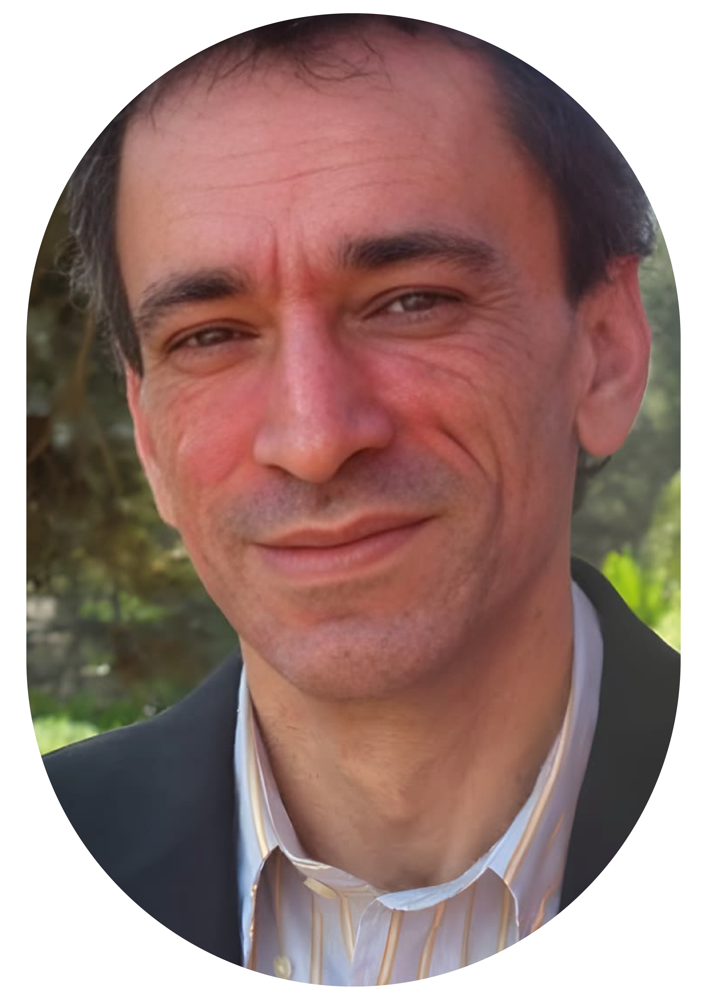
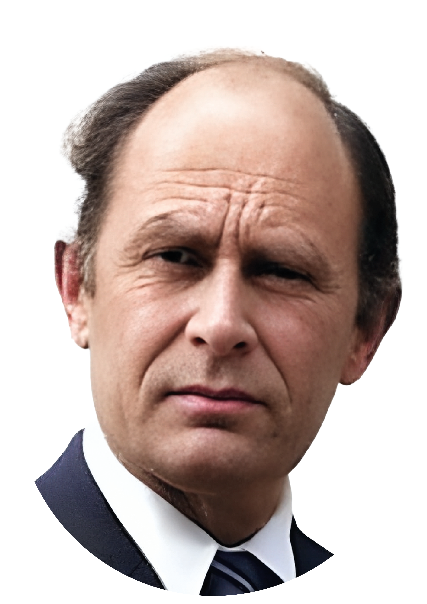
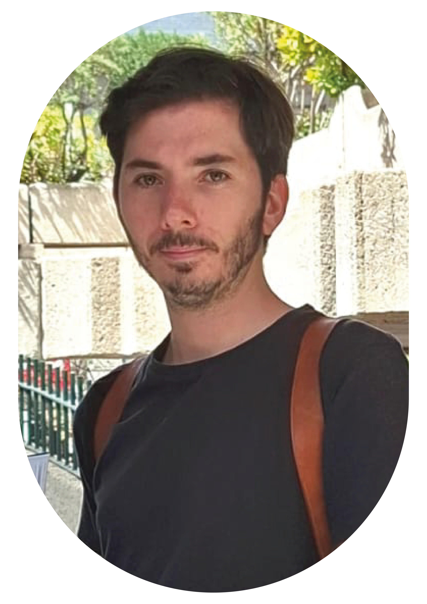
EXPERIENCIAS
LITERARIAS
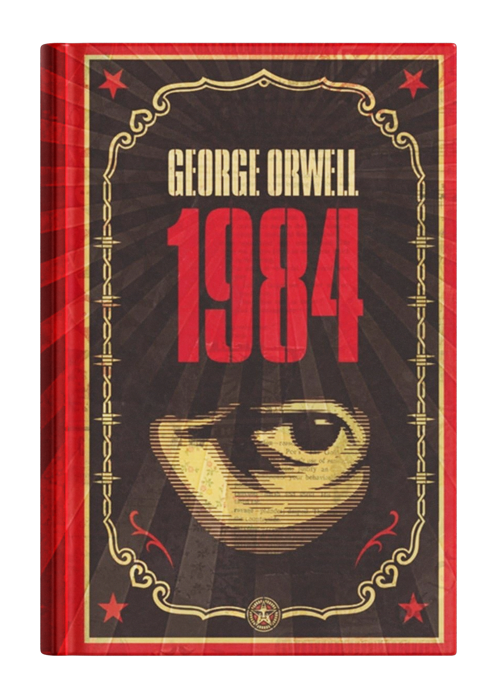
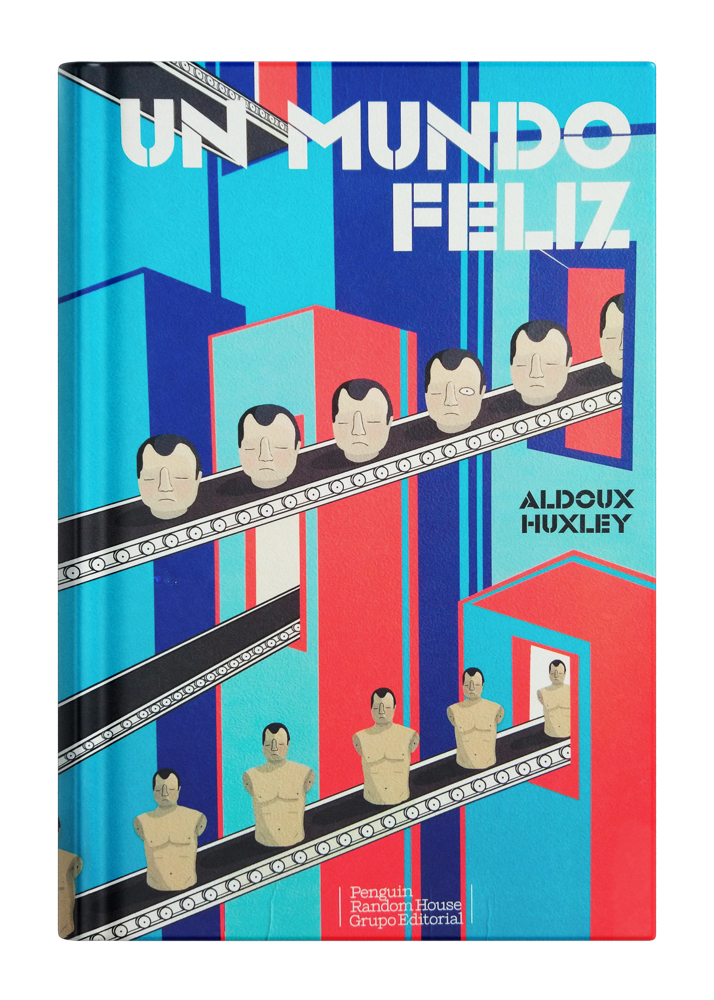
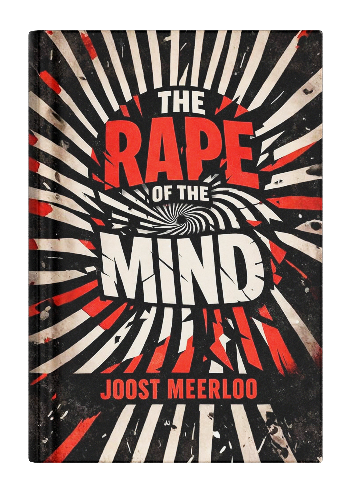
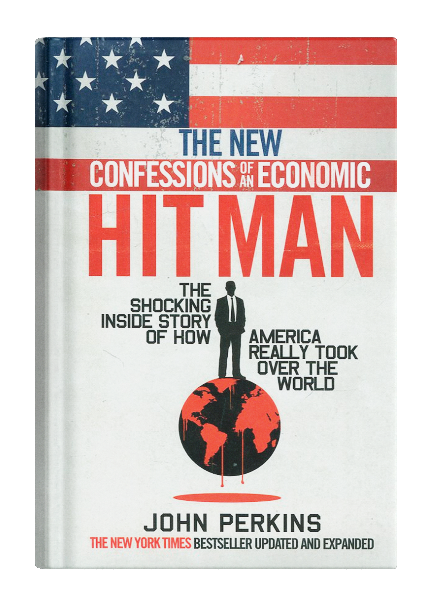
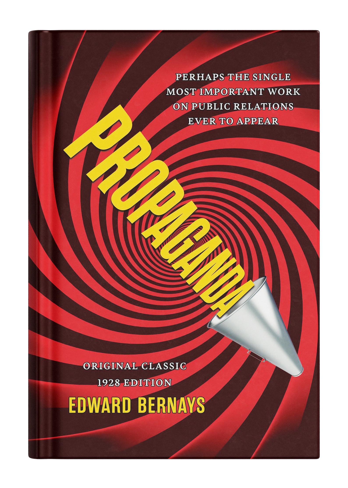
CINEMATOGRÁFICAS
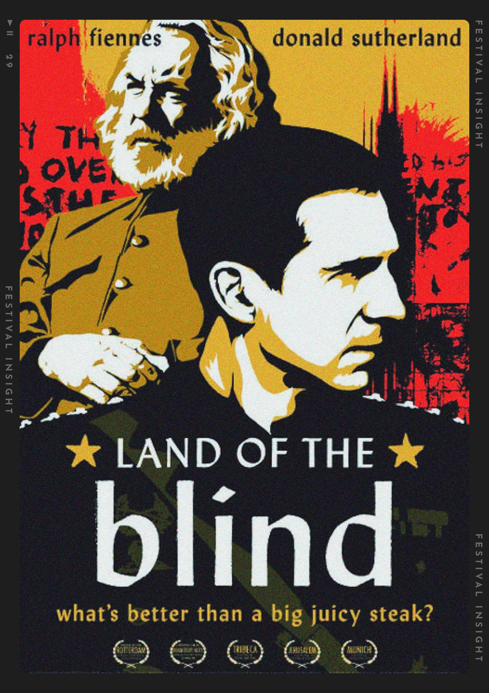
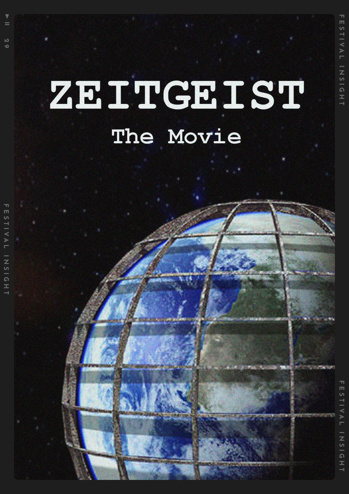
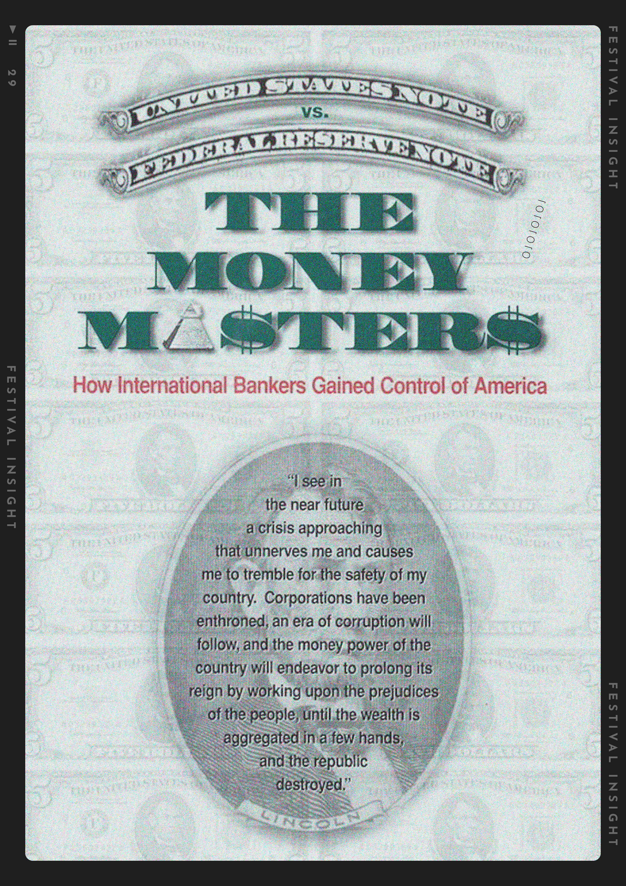